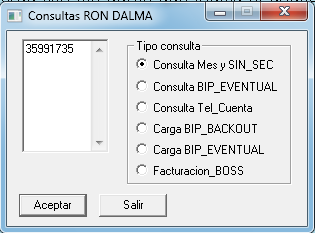
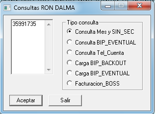
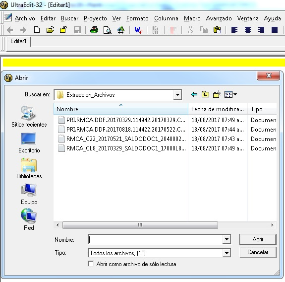

ver siguiente modelo:


 Menu Mainframe➔
Menu CAPI➔
Menu Extracciones➔
Menu Mainframe➔
Menu CAPI➔
Menu Extracciones➔
Pasos para la extracción Corporativa
1.- En la herramienta Consultas Ronald, verificar si la cuenta a procesar concuerda con los datos que indica el analista de Pruebas,
ver siguiente modelo:

2.- Si no posee está información, por favor consulte en el TOAD con el usuario arbor, base de datos KP01CUS3 o KP01CUS1, ver siguiente modelo:


3.- Realizados los pasos de verificación de la cuenta, proceder a la carga en BIP_EVENTUAL con la
herramienta de Consultas Ronald:

4.- Accesamos al servidor srvft15, y procesamos crea_saldo_convenio.sh

5.- Realizará dos preguntas, la primera fecha con formato YYYYMMDD en nuestro caso colocamos 20160529,
y la segunda Introduzca ciclo o consecutivo, en nuestro ejemplo fue N4

5.A Si es una extracción con Saldos_Convenios siga los siguientes pasos, de lo contrario siga con el paso 6
5.B El analista de pruebas indicara 2 archivos para ser leidos junto con la cuenta para ser extraidos, tome el siguiente ejemplo:Cta. 47072722
Archivos RMCA_C22_20170521_SALDODOC1_20400023_PROD.TXT y PRI.RMCA.DDF.20170818.114422.20170522.C22.PROD.txt
Estos archivos se buscaran en el servidor rmcaqacon el producto Core FTP LE
Para los archivos que comienzan con la nomeclatura RMCA use la siguiente ruta /ABAP/INTERFAZ/SALDO/DOC1/SALIENTE/
Para los archivos que comienzan con la nomeclatura PRI use la siguiente ruta /ABAP/INTERFAZ/CONVENIO_FACT/DOC1/SALIENTE/
Ahora proceda a copiar en su disco D:\Extraccion_Archivos\ los dos archivos anteriores.
5.C En el punto 5 se crearón 2 archivos en blanco, estos son:
En el servidor srvft15 en la ruta /data/extraccion/ITCVDDFB/Input/Ready/ estara el archivo PRI.RMCA.DDF.20170529.102453.20170529.CL9.PROD.txt y en la ruta /data/extraccion/ITRMDDFB/Input/Ready/ estara el archivo RMCA_CL9_20170529_SALDODOC1_17000L9_PROD.TXT, ahora proceda a copiar en su disco D:\Extraccion_Archivos\ los dos archivos anteriores.
5.D Copiar los archivos que indico el analista de pruebas en los archivos que se crearon en blanco en el punto 5, usaremos el producto UEDIT32:


Al finalizar, continuar con el paso 6
6.-Ahora vamos a Control-M/Enterprise y antes de ordenar la cadena de extracción por favor verifcar que las condiciones
de fecha no existán, ver ejemplo:


8.- Ordenamos la cadena de extracción Corporativa y adicionamos las condiciones para dar inicio, ver ejemplo:


9.- Finalizada la cadena, creamos ONDEMAND, con un job que se ejecuta en el Mainframe, ver ejemplo:


FIN DEL PROCESO